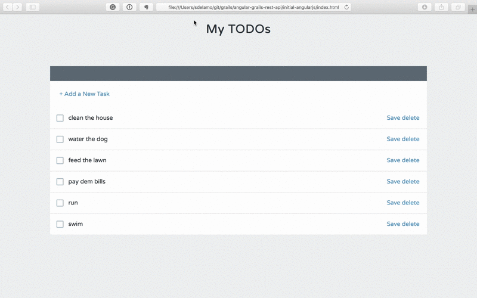
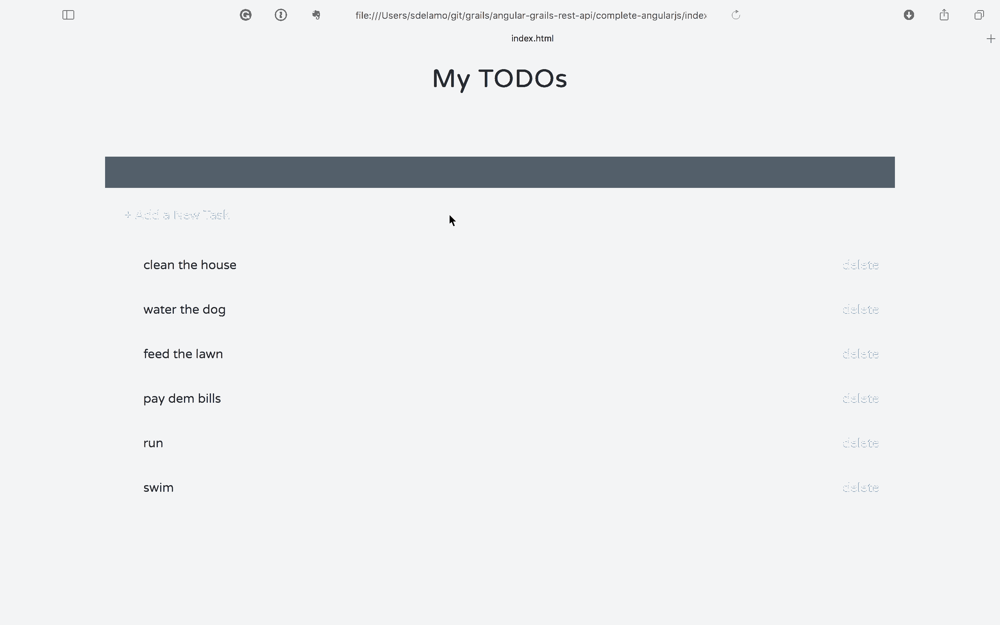

Building a REST API with Grails and AngularJS 1.x
Build a backend for an already existing AngularJS application (Angular 1) with Grails rest api profile
Authors: Sergio del Amo
Grails Version: 3.2.6
1 Getting Started
In this guide you are going to connect an existing AngularJS todo app to a Grails backend.
1.1 What you will need
To complete this guide, you will need the following:
-
Some time on your hands
-
A decent text editor or IDE
-
JDK 1.7 or greater installed with
JAVA_HOMEconfigured appropriately
1.2 How to complete the guide
To complete this guide, you will need to checkout the source from Github and work through the steps presented by the guide.
To get started do the following:
-
Download and unzip the source or if you already have Git:
git clone https://github.com/grails-guides/grails-restapi-angularjs.git -
cdintograils-guides/grails-restapi-angularjs/initial -
Head on over to the next section
You can go right to the completed example if you cd into grails-guides/grails-restapi-angularjs/complete
|
2 Initial Angular Application
This section displays the code developed during the Treehouse AngularJS course. During that course an AngularJS application is developed. The application is a todo list manager.
| The initial AngularJS app is not connected to any backend. If you refreshed the browser, todo list chanages are lost. |

index.html is the entry point to our AngularJS app.
/initial-angularjs/index.html
<!doctype html>
<html lang="en">
<head>
<title></title>
<link href='https://fonts.googleapis.com/css?family=Varela+Round' rel='stylesheet' type='text/css'>
<link href='styles/main.css' rel='stylesheet' type="text/css">
</head>
<body ng-app="todoListApp">
<h1>My TODOs</h1>
<todos></todos>
<script src="vendor/angular.js" type="text/javascript"></script>
<script src="scripts/app.js" type="text/javascript"></script>
<script src="scripts/controllers/main.js" type="text/javascript"></script>
<script src="scripts/services/data.js" type="text/javascript"></script>
<script src="scripts/directives/todos.js" type="text/javascript"></script>
</body>
</html>We create the AngularJS application, in app.js
/initial-angularjs/scripts/app.js
angular.module("todoListApp", []);An AngularJS controller manages the application flow:
/initial-angularjs/scripts/controllers/main.js
'use strict';
angular.module('todoListApp')
.controller('mainCtrl', function($scope, dataService) {
$scope.addTodo = function() {
var todo = {name: "This is a new todo."};
$scope.todos.unshift(todo);
};
dataService.getTodos(function(response) {
$scope.todos = response.data;
});
$scope.deleteTodo = function(todo, $index) {
dataService.deleteTodo(todo);
$scope.todos.splice($index, 1);
};
$scope.saveTodo = function(todo) {
dataService.saveTodo(todo);
};
})We have a todos directive. This directive uses the previous controller and the next template:
/initial-angularjs/scripts/directives/todos.js
angular.module('todoListApp')
.directive('todos', function() {
return {
templateUrl: 'templates/todos.html',
controller: 'mainCtrl',
replace: true
}
})/initial-angularjs/templates/todos.html
<div class="list">
<div class="add">
<a href="" ng-click="addTodo()">+ Add a New Task</a>
</div>
<div class="item" ng-class="{'editing-item': editing, 'edited': todo.edited, 'completed': todo.completed}"
ng-repeat="todo in todos | orderBy: 'completed'" ng-init="todo.completed = false">
<input ng-model="todo.completed" type="checkbox"/>
<span ng-click="todo.completed = !todo.completed; todo.edited = true"></span>
<label ng-click="editing = true" ng-hide="editing">
{{todo.name}}</label>
<input ng-change="todo.edited = true" ng-blur="editing = false;" ng-show="editing" ng-model="todo.name" class="editing-label" type="text"/>
<div class="actions">
<a href="" ng-click="saveTodo(todo)">Save</a>
<a href="" ng-click="deleteTodo(todo, $index)" class="Delete">delete</a>
</div>
</div>
</div>Our data service is currently loading todos from a mock json file.
/initial-angularjs/scripts/services/data.js
'use strict';
angular.module('todoListApp')
.service('dataService', function($http) {
this.getTodos = function(callback){
$http.get('mock/todos.json')
.then(callback)
};
this.deleteTodo = function(todo) {
console.log("The " + todo.name + " todo has been deleted!")
};
this.saveTodo = function(todo) {
console.log("The " + todo.name + " todo has been saved!");
};
});/initial-angularjs/mock/todos.json
[
{"name": "clean the house"},
{"name": "water the dog"},
{"name": "feed the lawn"},
{"name": "pay dem bills"},
{"name": "run"},
{"name": "swim"}
]3 Writing the Grails Application
The initial project, which we are going to work on, was generated with Grails REST profile
grails create-app myapp --profile=rest-api3.1 Domain Class
Create a persistent entity to store Todos. Most common way to handle persistence in Grails is the use of Grails Domain Classes:
A domain class fulfills the M in the Model View Controller (MVC) pattern and represents a persistent entity that is mapped onto an underlying database table. In Grails a domain is a class that lives in the grails-app/domain directory.
complete$ ./grailsw create-domain-class TodoThe Todo domain class is our data model. We define different properties to store the Todo characteristics.
/grails-app/domain/demo/Todo.groovy
package demo
import grails.rest.Resource
@Resource(uri='/todos')
class Todo {
String name
boolean completed
static constraints = {
}
}With a Unit Test, we test that name is a required property.
/src/test/groovy/demo/TodoSpec.groovy
package demo
import grails.test.mixin.TestFor
import spock.lang.Specification
@TestFor(Todo)
class TodoSpec extends Specification {
void "test name is required"() {
when:
def todo = new Todo(name: name)
then:
!todo.validate()
todo.errors['name'].code == errorCode
where:
name | errorCode
null | 'nullable'
'' | 'nullable'
}
}We then load some test data in BootStrap.groovy.
/grails-app/init/demo/BootStrap.groovy
package demo
class BootStrap {
def init = { servletContext ->
def todos = [
[name: 'clean the house'],
[name: 'water the dog'],
[name: 'feed the lawn'],
[name: 'pay dem bills'],
[name: 'run'],
[name: 'swim']
].each { new Todo(name: it.name).save() }
}
def destroy = {
}
}We annotated the domain class with @Resource
/grails-app/domain/demo/Todo.groovy
import grails.rest.Resource
@Resource(uri='/todos')
class Todo {This annotation exposes the Todo domain class as a REST resource
The easiest way to create a RESTful API in Grails is to expose a domain class as a REST resource. Simply by adding the Resource transformation and specifying a URI, your domain class will automatically be available as a REST resource in either XML or JSON formats. The transformation will automatically create a controller called TodoController and register the necessary RESTful URL mapping
This is the URL Mapping registered for our domain class.
HTTP Method URI Grails Action |
URI |
Grails Action |
GET |
/todos |
index |
GET |
/todos/create |
create |
POST |
/todos |
save |
GET |
/todos/${id} |
show |
GET |
/todos/${id}/edit |
edit |
PUT |
/todos/${id} |
update |
DELETE |
/todos/${id} |
delete |
3.2 Enable CORS
Because the client side (AngularJS) and server side (Grails) will be running on separate ports, CORS configuration is required.
Modify your application.yml to enable CORS
/complete/grails-app/conf/application.yml
---
grails:
cors:
enabled: true4 Connect Angular Application to Grails
We add a directive to detect when the users presses ENTER while editing a Todo name
/complete-angularjs/index.html
<script src="scripts/directives/ngEnter.js" type="text/javascript"></script>/complete-angularjs/scripts/directives/ngEnter.js
angular.module('todoListApp')
.directive('ngEnter', function() {
return function(scope, element, attrs) {
element.bind("keydown keypress", function(event) {
if(event.which === 13) {
scope.$apply(function(){
scope.$eval(attrs.ngEnter, {'event': event});
});
event.preventDefault();
}
});
};
});We are going to modify the UI slightly. E.g. We are going to remove the save button, if the user modifies the todo (either changes the name or completes), we save the changes in the server.
/complete-angularjs/templates/todos.html
<div class="list">
<div class="add">
<a href="" ng-click="addTodo()">+ Add a New Task</a>
</div>
<div class="item" ng-class="{'editing-item': editing, 'edited': todo.edited, 'completed': todo.completed}"
ng-repeat="todo in todos | orderBy: 'completed'">
<input ng-model="todo.completed" type="checkbox"/>
<span ng-click="todo.completed = !todo.completed; todo.edited = true;saveTodo(todo);"></span>
<label ng-click="editing = true" ng-hide="editing">
{{todo.name}}</label>
<input ng-enter="editing=false;saveTodo(todo)" ng-change="todo.edited = true" ng-blur="editing = false;" ng-show="editing" ng-model="todo.name" class="editing-label" type="text"/>
<div class="actions">
<a href="" ng-click="deleteTodo(todo, $index)" class="Delete">delete</a>
</div>
</div>
</div>/complete-angularjs/scripts/controllers/main.js
'use strict';
angular.module('todoListApp')
.controller('mainCtrl', function($scope, dataService) {
$scope.addTodo = function() {
dataService.addTodo(function(response) {
$scope.todos.unshift(response.data);
});
};
dataService.getTodos(function(response) {
$scope.todos = response.data;
});
$scope.deleteTodo = function(todo, $index) {
dataService.deleteTodo(todo, function(response) {
$scope.todos.splice($index, 1);
});
};
$scope.saveTodo = function(todo, $index) {
dataService.saveTodo(todo, function(response) {
console.log(response.data)
});
};
})Data service now connects to a Grails backend instead of loading a mock json file.
/complete-angularjs/scripts/services/data.js
'use strict';
angular.module('todoListApp')
.service('dataService', function($http) {
var todosGrailsServerUri = 'http://localhost:8080/todos';
this.getTodos = function(callback){
$http.get(todosGrailsServerUri).then(callback)
};
this.addTodo = function(callback) {
var todo = {name: "This is a new todo.", completed: false};
$http.post(todosGrailsServerUri,todo).then(callback);
}
this.deleteTodo = function(todo, callback) {
$http.delete(todosGrailsServerUri + '/' + todo.id).then(callback);
};
this.saveTodo = function(todo, callback) {
$http.put(todosGrailsServerUri + '/' + todo.id,todo).then(callback);
};
});5 Running the Application
To run the application use the ./gradlew bootRun command which will start the application on port 8080.
Open you angular app and you will enjoy a todo manager powered by a Grails backend. You can refresh your browser without losing the changes.

6 Do you need help with Grails?
OCI sponsored the creation of this Guide. OCI offers several Grails services: